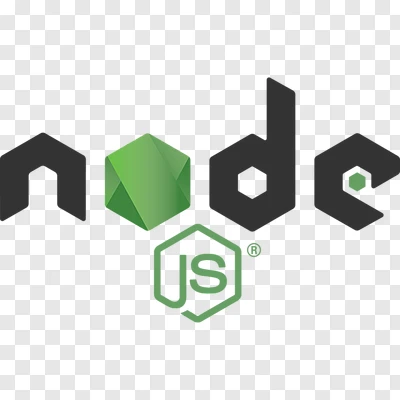
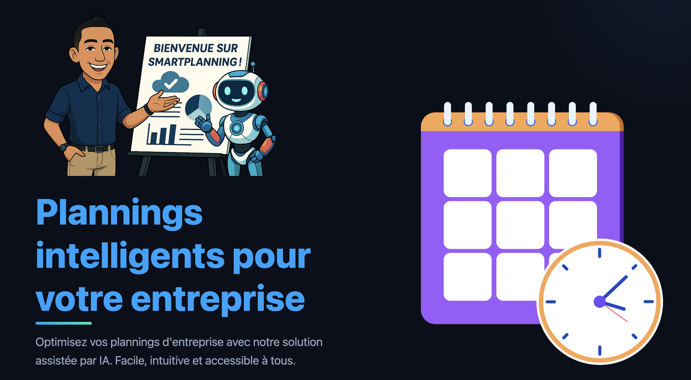
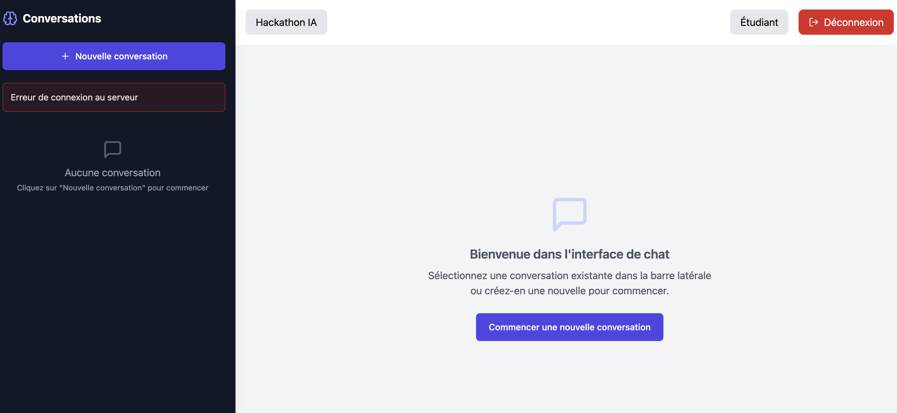
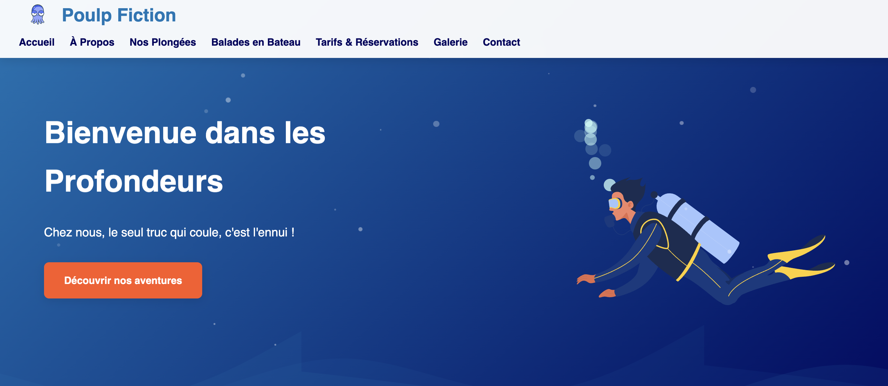
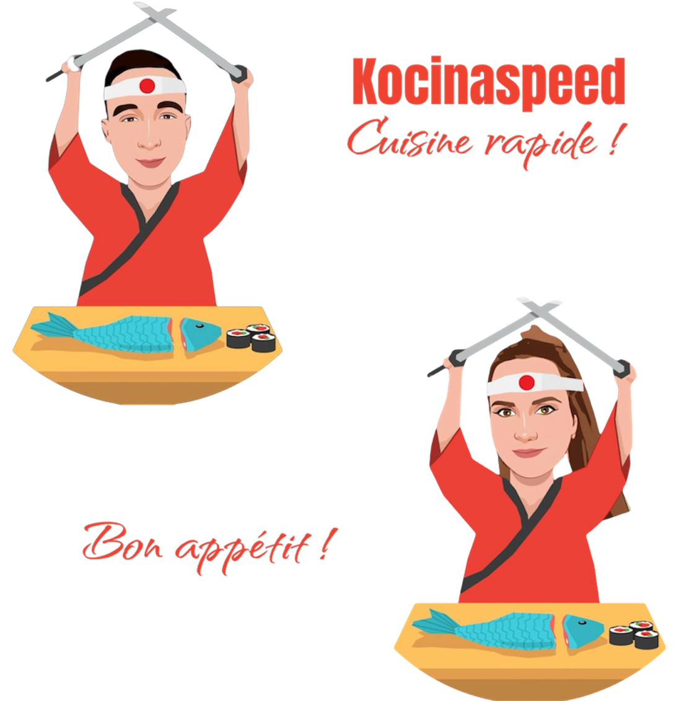
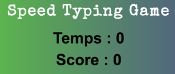

Bienvenue dans mon univers
Après douze ans à conseiller clients en multimédia. Du PC familial aux TV dernier cri, un bilan de compétences et plusieurs tests de personnalité m’ont révélé une véritable appétence pour la résolution de problèmes techniques. Guidé par cette découverte, je me suis lancé dans le développement web, convaincu que mon empathie et ma rigueur trouveraient
En observant des managers perdre des heures sur Excel, calculatrice en main et demandes de congés sur papier, j’ai imaginé un SaaS plus intuitif. Installé en local sur le PC de un premier utilisateur, SmartPlanning lui fait déjà gagner 3 heures par semaine. Aujourd’hui, je peaufine ses fonctionnalités grâce à ses retours avant un déploiement officiel.
L’avenir, je le conçois avec des agents IA capables de prendre en charge les tâches répétitives et d’anticiper les besoins en temps réel. Parallèlement, j’apprends à utiliser n8n pour automatiser mes propres workflows : des notifications de planning aux relances de feedback, chaque automatisme libère du temps pour innover.
Malgré les doutes post-diplôme, un marché saturé de juniors, je reste convaincu que l’apprentissage continu est la voie vers l’excellence. Ma formation Bac+3/4 Concepteur Développeur d’Applications IA à La Fabrique Numérique Paloise m’équipe déjà des compétences nécessaires. Aujourd’hui, je suis prêt à rejoindre une équipe pour apporter ma touche de créativité, ma motivation à toute épreuve et contribuer à des projets qui font sens.
{kind=link}
Vidéo de candidature
Mon Parcours
Après avoir étudié et travaillé dans le monde du commerce, j'ai décidé de me réorienter dans le domaine des nouvelles technologies.
ü§ñ Concepteur d√©veloppeur d'applications (sp√©cialisation IA)
2024-2026 - Fabrique Numérique Paloise.
Gestion de projet, développement d'applications, cybersecurité, intelligence artificielle.
üìö Formation DWWM
2023 - Titre Professionnel Développeur Web et Web Mobile.
Formation intensive de 6 mois en développement full-stack (école en ligne Studi). Front-end, back-end, bases de données, gestion de projet, SEO.
Vendeur multimédia
2012-2024 - E.Leclerc Mourenx.
Accueil, vente, conseil clientèle, gestion des stocks, commandes, mise en valeur des rayons, accueil et négociation fournisseurs, gestion service après vente, livraisons à domicile.
üìö Licence Commerce et logistique de distribution
2012 - IUT de Bayonne.
Cette licence avait pour particularité d'être bilingue espagnol et comprenait un stage de 4 mois dans un pays hispanophone. J'ai fait mon stage en tant que commercial dans une entreprise d'aliments pour animaux (Agroindustrias Baires) à Buenos Aires en Argentine.
üìö BTS Management des unit√©s commerciales
2011 - Lycée Gaston Fébus (Orthez).
Le BTS comprenait un stage de 4 mois que j'ai fait chez Conforama (Lescar) en tant que vendeur multimédia.
üìö Bac √âconomique et Social sp√©cialit√© math√©mathiques
2007 - Lycée Albert Camus - Mourenx.
Mes Compétences
Au cours de mes formations, j'ai acquis une bonne expertise en front-end, maîtrisant HTML, CSS, JavaScript, TypeScript, ainsi que Bootstrap et Tailwind CSS. J'ai également développé des compétences approfondies en back-end, manipulant des bases de données SQL et noSQL, utilisé le langage PHP, et travaillé avec Symfony, Doctrine, et Twig pour créer des applications robustes et fonctionnelles. Je suis en train de me spécialiser en MERN stack (MongoDB, Express, React, Node.js).
J'ai également eu l'occasion d'organiser mes tâches à l'aide de Trello et de réaliser des maquettes de projets avec Figma. Je suis en train d'accorder une importance particulière à l'apprentissage de l'utilisation de Confluence et Jira pour la gestion de projets, la bonne rédaction de users stories et la communication avec les équipes.
Mes compétences sont en constante amélioration car pour moi la joie de ce métier fait que l'on en apprend tous les jours, d'autant plus en étant impliqué, curieux et passionné.
 HTML5/CSS
HTML5/CSS
BOOTSTRAP
 JavaScript
JavaScript
 TypeScript
TypeScript

Node JS
 React
React
 PHP
PHP
 SYMFONY
SYMFONY
 Mongodb
Mongodb
Mes Projets

Smart Planning
Réalisation d'une solution web de gestion d'équipes (plannings manuels, plannings automatiques avec IA, demande de congés, tâches personnelles, gestion des employés, etc.). En cours de développement. Déploiement final prévu fin Mai 2025, avec documentation et tuto vidéo.

Hackathon
Application de Comparaison de Modèles d'IA pour Hackathon, elle va permettre à des étudiants d'interagir avec différents modèles d'IA (OpenAI et Mistral), de comparer leurs réponses, et de sélectionner manuellement la meilleure réponse comme version finale. Projet en groupe de 3 dans le cadre de la formation CDA, commandé par l'association IA de Pau. En cours de développement. Stack MERN. Documentation et lien à venir.

Poulp Fiction
Réalisation d'un site web vitrine professionnel temporaire pour un projet de création de centre de plongée à St Cyprien.

Kocinaspeed
Projet d'entraînement personnel : Site web réalisé avec Symfony proposant des recettes de cuisine et intégrant un chatbot intéractif. Accès à un espace administrateur pour les gérants du site, pouvant éditer ou modifier les recettes du site dans la base de données, avec images et vidéos, gérer les avis des visiteurs. Création de la chaîne youtube. Montages des vidéos des recettes. Voir les liens ci-dessous pour la synthèse des détails de la conception, le code source sur Github ainsi qu'une vidéo publicitaire de présentation du site web.
Garage V.Parrot
Site web réalisé avec Symfony dans le cadre de l'examen final de la formation "DWWM", avec espace administrateur. Voir les boutons ci-dessous pour le dossier projet avec les détails de la conception ainsi que le Github.
Mon site web pro
Réalisation de mon site web professionnel, en React, création de ma micro-entreprise. Avec la présentation de mes services proposés, un portfolio et un formulaire de contact
StacyMakeupCreations
Projet personnel : Site web réalisé avec Symfony pour une personne désirant exposer ses créations de maquillage/ongles avec un espace administrateur pour gérer les publications, photos et vidéos.

Jeux de société
Site web régulièrement mis à jour réalisé pour une bande d'amis qui se réunissent régulièrement pour des soirées jeux de société, avec récapitulatif des scores, des jeux, anecdotes, photos, montages vidéos avec chansons personnalisées crées avec SUNO.AI. Javascript. Projet de création de base de donnée et espace administrateur à venir prochainement

Metal Gear
Projet personnel : Réalisation d'un site web sur l'univers de Metal gear (le jeu vidéo) avec la présentation des personnages, des intrigues, un quiz et un chatbot interractif qui vous permet de dialoguer avec Snake, le personnage principal du jeu. Ce site me sert notamment à un entraînement de l'utilisation de Javascript et l'intégration d'un chatbot personnalisé via une API chatgpt.

Crétion chaîne Youtube
Chaîne destinée à présenter mes projets en vidéos en tant que développeur web. Je compte également prochainement partager mes connaissances et astuces sous forme de vidéos, abonnez-vous !

Réalisation vidéo de candidature
Projet personnel : Réalisation d'une vidéo originale en utilisant l'IA qui présente mon personnage, mes compétences, mes motivations et mon expérience. J'ai utilisé NOTEBOOKLM pour générer un texte cohérent en lui fournissant comme sources mon CV, mon portfolio, mon linkedin, mes projets et d'autres documents montrant mon travail. J'ai ensuite généré une voix, puis un avatar IA sur HEYGEN, et pour finir j'ai monté la vidéo à l'aide de FCPX et publié sur ma chaine YOUTUBE.

Réalisation vidéo de candidature en podcast
Projet personnel : Réalisation d'une vidéo originale en utilisant l'IA de NotebookLM qui présente mon personnage, mes compétences, mes motivations et mon expérience sous forme de podcast. Pour finir j'ai monté la vidéo à l'aide de FCPX et publié sur ma chaine YOUTUBE.

La quête du trésor de Kaamelot
Exercice d'entraînement Javascript : Ce projet combine des algorithmes classiques (Dijkstra, BFS) avec des techniques de développement web modernes pour créer une expérience immersive et interactive dans l'univers de Kaamelot.
Jeu du Morpion
Exercice d'entraînement : Jeu du morpion réalisé en Javascript.

Jeu du Casse-briques
Exercice d'entraînement : Jeu du casse-briques réalisé en Javascript.

Jeu du typing game
Exercice d'entraînement : Jeu pour taper le plus vite possible réalisé en Javascript.
To do list
Exercice d'entraînement : Site de todolist réalisé en Javascript
Articles LinkedIn


üìö Mes D√©buts en Algorithmie : Une D√©couverte Inattendue üåø(l'importance des fondamentaux)
Lire l'article
üéØ √Ä la recherche d'une alternance en D√©veloppement Web et IA ! üöÄ
Lire l'article
üéß Un nouveau format pour se pr√©senter en podcast et en vid√©o ! üöÄ
Lire l'article
L'intelligence artificielle peut-elle me présenter mieux que moi-même ?
Lire l'articleUn chatbot interactif pour faciliter nos √©changes ! ü§ñ
Lire l'article
Présentation de ma candidature pour une alternance en concepteur développeur d'applications et IA.
Lire l'article
Je vous partage le chatbot interactif pour discuter avec le légendaire Solid Snake
Lire l'articleContact
N'hésitez pas à me contacter pour plus de renseignements. Je serais ravis de m'entretenir avec vous.
Téléphone
+33 6 79 08 88 45
christophe.mostefaoui.dev@gmail.com
Localisation
Artix (64170), France